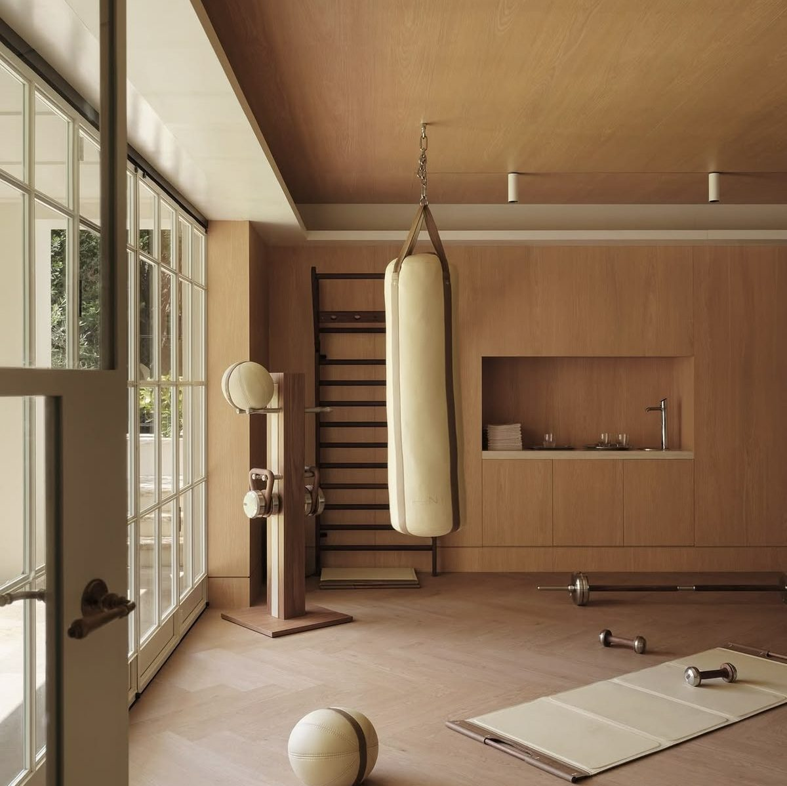

Part of
the house.
Investor overview · 2026

Not one. And I have been in a lot of them, in houses where every other room was thought about carefully by somebody who was paid well to think about it. Then you open one more door and it is a bench press, some weights and a kettlebell thrown in a room.
Stripped down, industrial, metal and plastic, lit like a parking garage. In the most considered house on the street it is the one room nobody considered. You can feel it the second you walk in, and it is why the door usually stays shut.
That is the whole idea. There is a room missing from these houses and we know how to make it.

Private gyms and wellness rooms, designed, supplied, installed and looked after. North Texas first, then New York and New England.
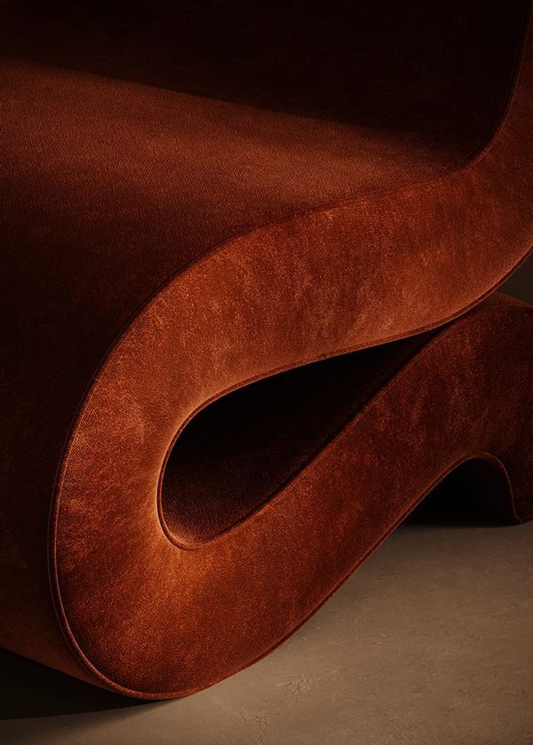
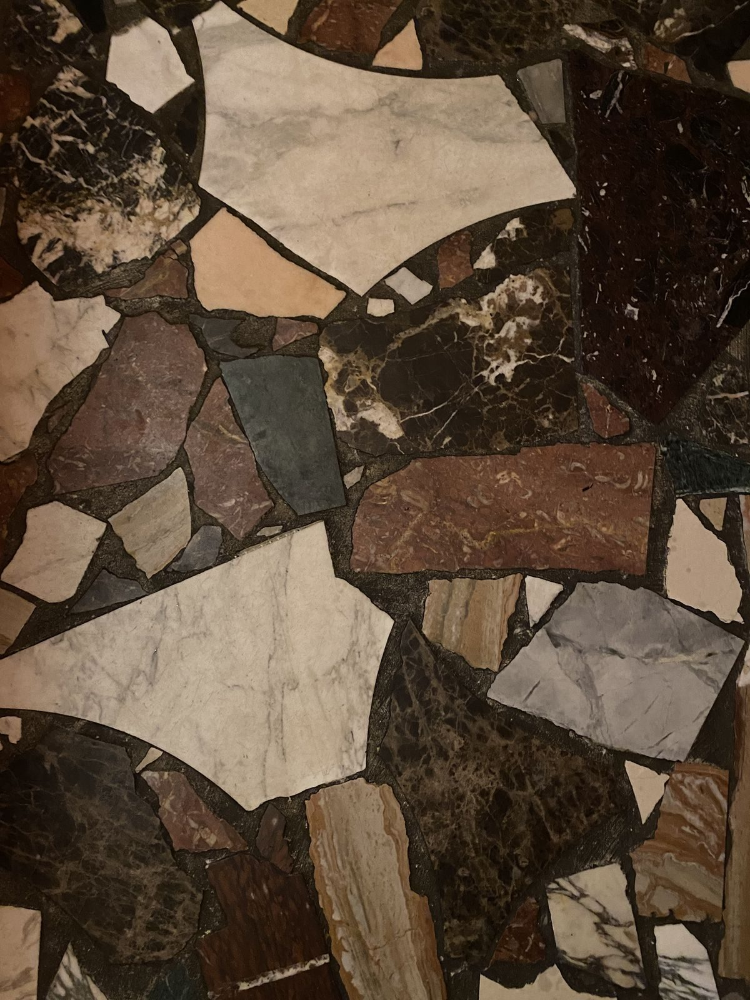
Limewash plaster on the walls, because it moves through the day instead of sitting flat. Rift sawn white oak on the floor so the grain stays quiet underfoot. Honed limestone and terrazzo in the wet rooms, never polished, because polished stone and wet feet are a bad idea somebody has every year.
Leather, wool and linen where you sit down. Western red cedar in the sauna, for the smell and because it stays cool enough to lean on. Marble, iron, rubber, brushed stainless. Something green and alive in every room, which sounds like a small thing and is the difference between a space and a room.
And a scent, because a room has one whether anybody chose it or not. Cedar, leather, bergamot, vetiver.
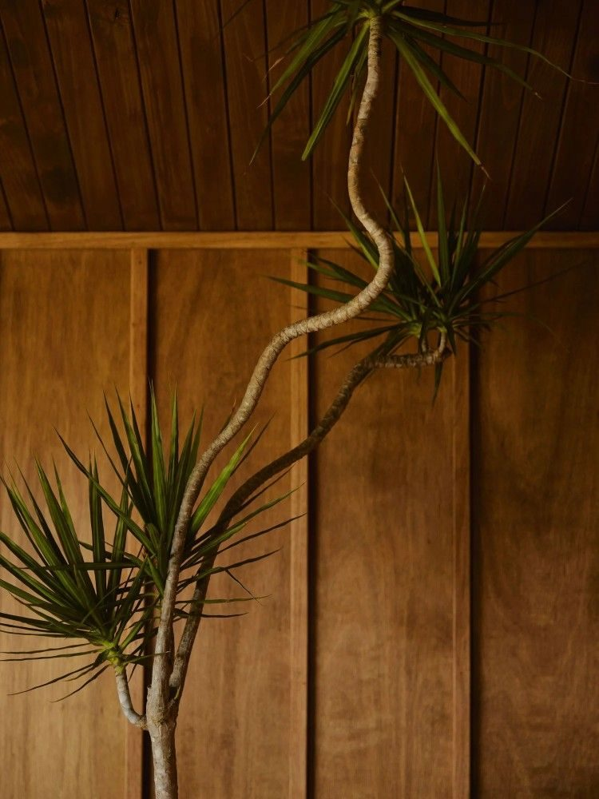
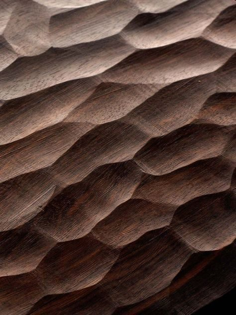
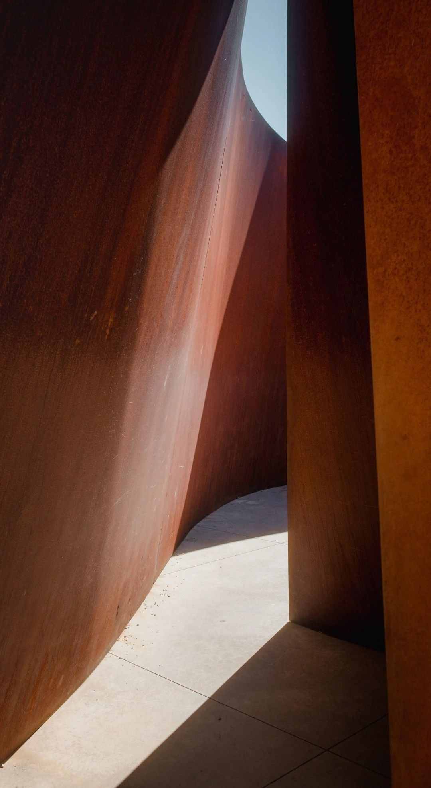
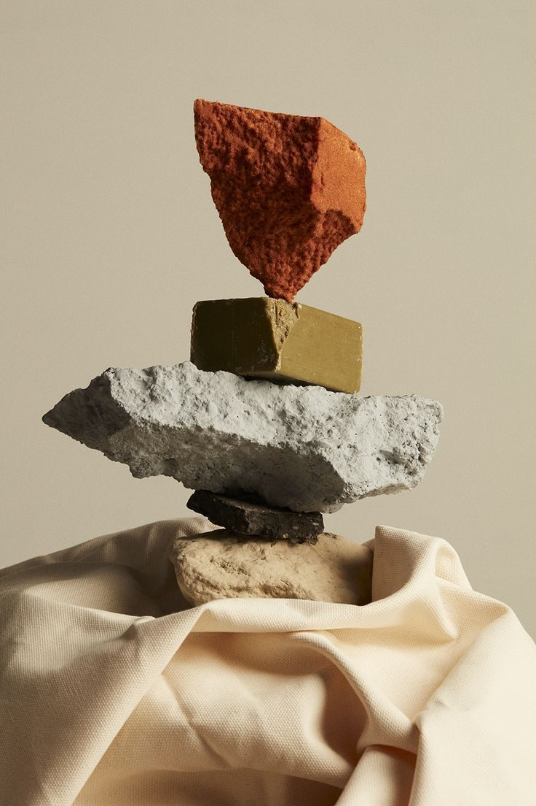
You are about to do something difficult, on purpose, at six in the morning, and you have every reason to go back to bed. A room that is cold and loud and grey does not help with that. A room you actually want to be in does.
So the first hour is what we design for. Warm light on a plaster wall instead of a strip light overhead. Wood you can feel the grain of. Leather wrapped handles. Music where you want it and a screen that is part of the room rather than shouting at you the moment you open the door.
Nothing loud. No neon. Nothing that looks like equipment pretending to be furniture. The test we hold everything to is whether you want to stay in there a few minutes longer than you meant to.
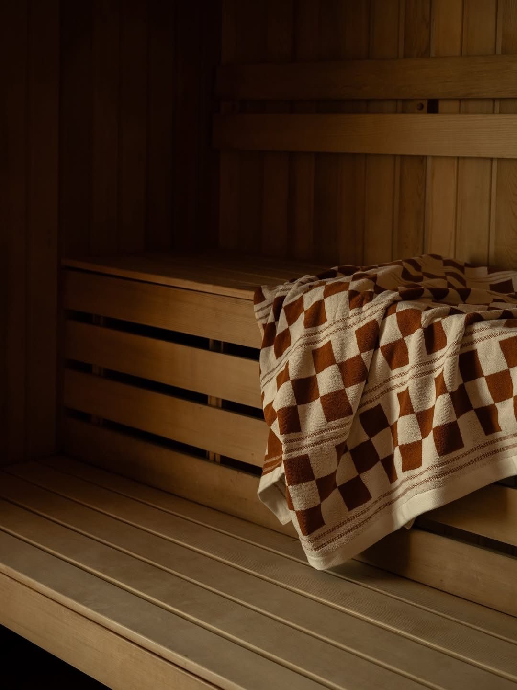
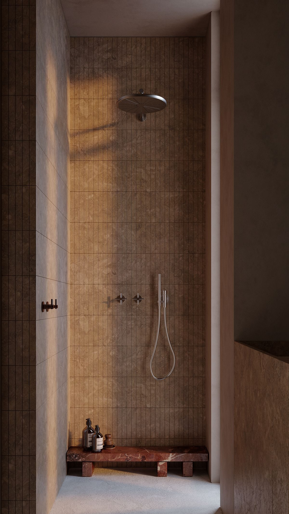
Health at home is not one room and the industry keeps selling it as one. There is the hour you put in, and there is the heat, the cold, the water and the sitting still that decides whether you can do it again on Thursday. Both of us have had a sauna and cold water within reach for years and it is the part we would not give up.
So we draw both from the first meeting. It is also the commercially serious half: growing faster, skewing older, carrying the bigger budget, and it is the one that has to be settled before the walls close because it wants water, drainage and power the house was never drawn for.
A platform that takes a dropped bar without the whole house hearing it. A rack in white oak and brushed steel rather than black powder coat. Leather wrapped handles. Whatever cardio somebody will really get on, and none of the rest.
Sixty to two hundred and fifty thousand dollars.
Sauna, cold plunge and steam where the house will carry them. Cedar, honed limestone, linen, and a shower big enough to stand in without touching anything. Somewhere to sit afterward that is better than the bench you came off.
Forty to two hundred thousand.
North Texas has more money in it than it has ever had, most of it recent, and the people holding it are building or renovating. The wellness floor is already on the drawings. Nobody is lined up who can build it well.
Growth in Dallas resident millionaires between 2014 and 2024, one of the fastest climbs in the country. Henley & Partners, USA Wealth Report 2025
The premium a wellness oriented home carries over a comparable one. Demand has more than doubled in five years. Sotheby's International Realty, 2026 Mid Year Luxury Outlook
A spec house going up on Strait Lane in Dallas lists a dedicated wellness area as part of the standard program. Listing and local press, read 2026-09-15
Nobody has to be convinced the room belongs in the house any more. That argument is over and we did not have to win it. The open question is who builds it.
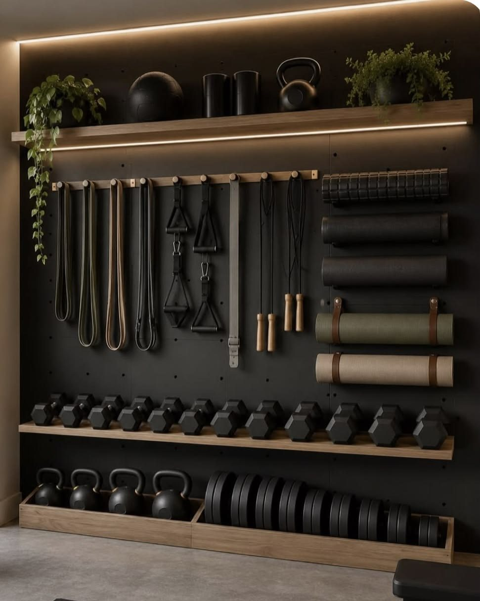
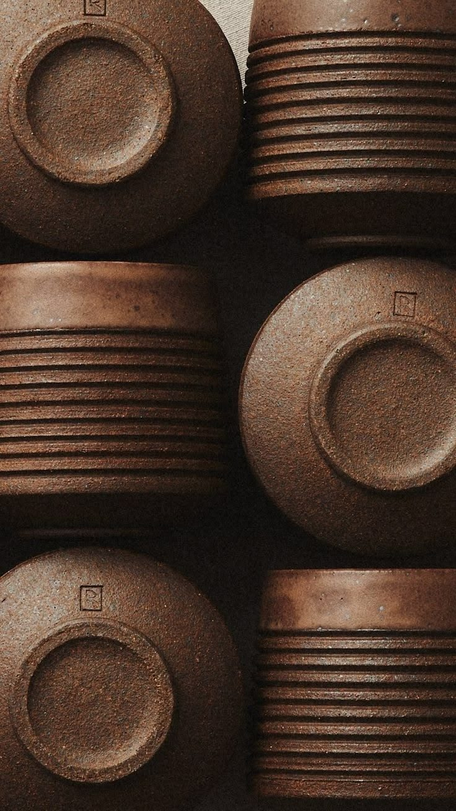
Somebody says they want the full setup. Two conversations later it turns out they ride for forty minutes most mornings, they have a shoulder that has not been right since 2019, and the person actually in there five days a week is their wife.
That second version is the room we draw, and getting to it is most of the work. Their height sets the bar height and the shelf height. A shoulder that no longer goes overhead changes what lives on the wall. Six foot four means the ceiling matters more than the square footage.
Then every piece comes with a page saying why it is that one. The rack is forty two inches instead of the usual forty eight, because the door swings left and the wider one would have cost them the corner. It is not the rack we sell the most of. We write that down because we earn a margin on what we supply, and it is how anyone can tell whether a thing is in the room for their sake or for ours.
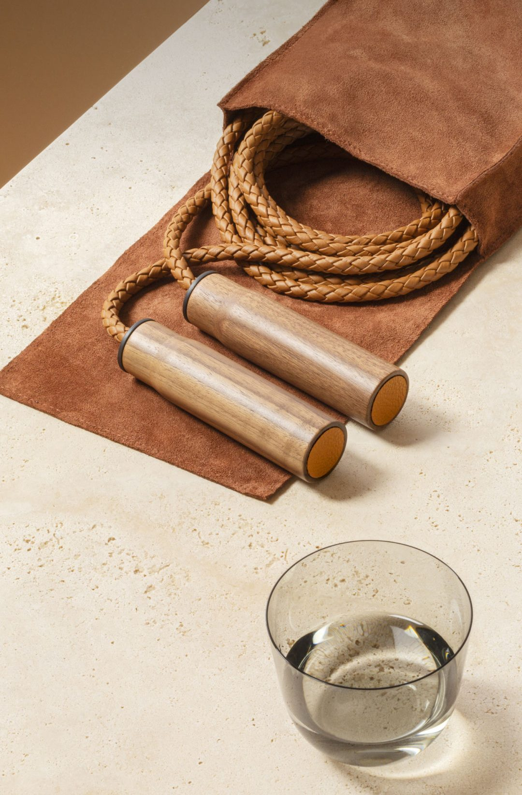
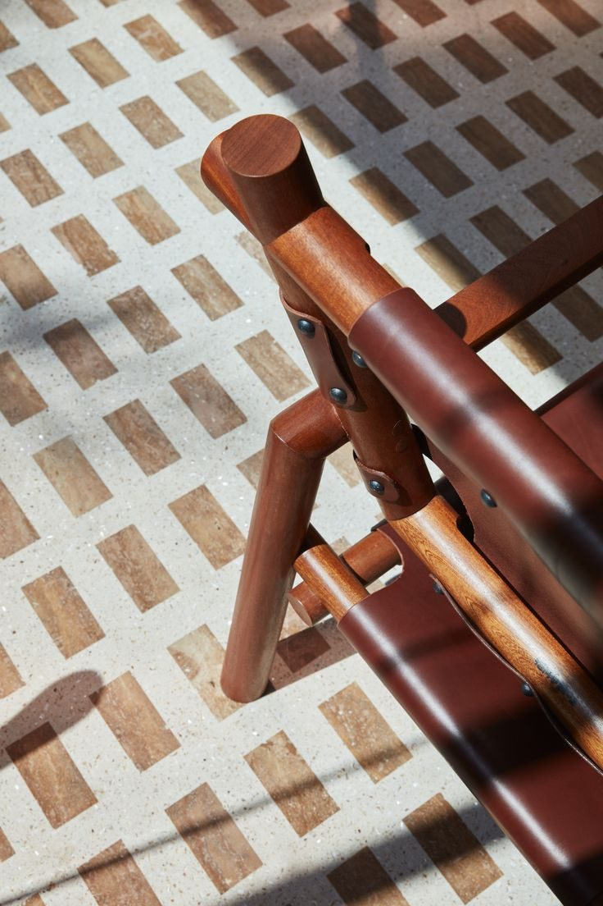
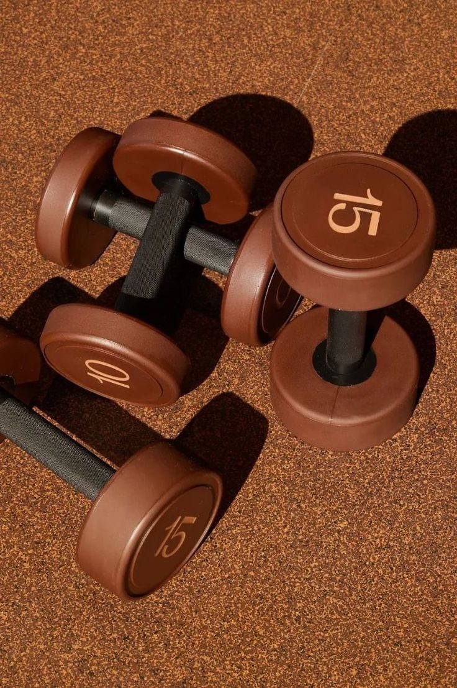
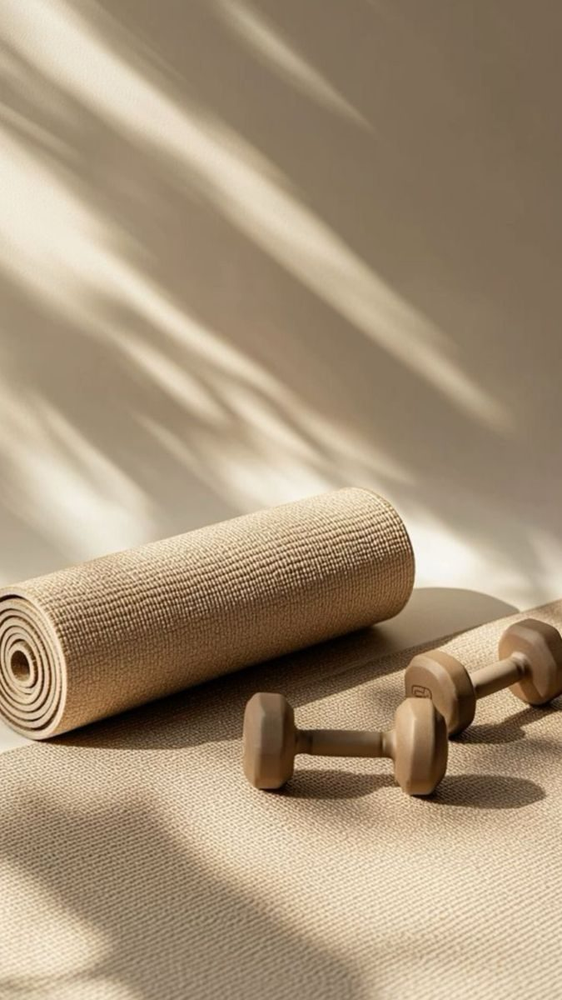
We read every firm in the country we could find doing high end home gyms and wellness rooms. Saying what we found is cheaper than having somebody find it for us.
Public sources, read 2026-09-15. Full working in the appendix.
There is no national platform in this category. It is a long tail of small regional firms, mostly owner operated, plus manufacturer run design programs that can only sell one brand. The only public financial data point we could find is a three year old firm in Connecticut with $1.28M of revenue asking $795,000 for the whole business. That is the scale of the field.
Private equity has consolidated audio visual integration and pool service in the last two years and has not touched this. The adjacent categories have platforms and this one does not.
Snap One and Control4, and the pool service roll up trackers, read 2026-09-15
The pieces all exist. Nobody has put them in one place: both rooms, one studio, our own crew, several makers, a written reason for every piece, and a care plan that covers the sauna and the plunge and not just the treadmill. Selling through the trade rather than a showroom is the sixth, and it is the one our own research supports least.
Every part of that exists somewhere, just never together. The two that matter most are the written reason and the care plan. One is a trust argument nobody else can make without changing their business. The other is the difference between what this company is worth at four times earnings and at seven.
The playbook is the high end audio visual integrator of twenty years ago. Sell to the trade, get written into the plans early, and look after the house for as long as the family owns it.
| Where the money comes from | On a $120,000 room |
|---|---|
| Design fee. Paid up front, credited against the project. Seven and a half to thirty five thousand depending on scope. | $18,000 |
| Supply. Several makers, at a dealer margin of 25 to 35 percent. This is the engine. | $72,000 |
| Install and project management. Our own crew, beside the builder. | $30,000 |
| Care plan. Two to eight thousand a year, attached at handover, running for the life of the room. | $2,000 a year |
| Gross profit on the project | About 39% |
That room runs a little above the 34 to 38 percent we hold the company to, and it should. A flagship with both rooms in it carries the design fee and the install better than a single gym or a design only job, and the blended number has to live with all three.
Everything above is a good small business. Whether it is worth four times its earnings or seven comes down to one variable: how much of the revenue is recurring.
What an integrator doing one off design and install work trades at. CT Acquisitions, AV integration exit guide, 2026
The same business with service contracts underneath it. In home services, recurring above 40 percent of revenue adds 1.5 to 2.5 times on its own. CT Acquisitions, home services EBITDA multiples, 2026
Year 5 in the conservative case is $1.42M of EBITDA. That sits in the band that prices at four to six times, so $5.7M to $8.5M. The plan's conservative valuation of $7.8M to $9.9M is at the top of that band and above it, which works out at five and a half to seven times, and it is only reachable if three things are true.
That is the investment case stated honestly. The open question is not demand, which the figures earlier in this document already speak to, and the houses are drawn for the room whether or not we build it. It is whether this becomes a contract business or stays a project business, and every decision in the plan is aimed at that one question.
Texas first is slower and cheaper to prove. Both markets from the start is faster, needs a bigger raise, and needs a second install standard sooner than we would like.
78 projects. EBITDA $1.42M. Raise of $500,000 to $600,000.
112 projects. EBITDA $2.04M. Raise of $900,000 to $1.1M.
Open, and we would rather say so than paper over it. The use of funds, the runway in months, the structure and the terms are not settled, and they are the first three things anybody sensible asks. We would rather work them out in a conversation than put a number on a page we have not earned.
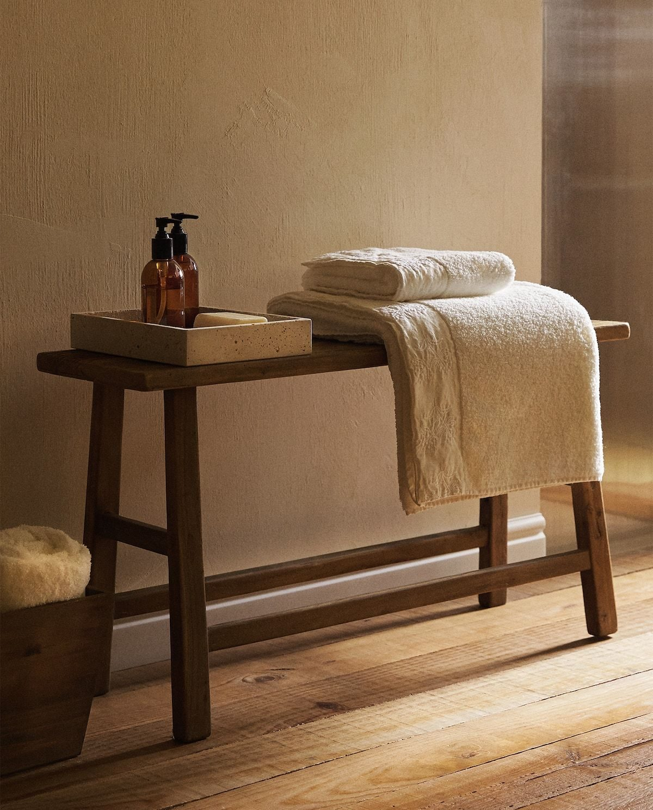
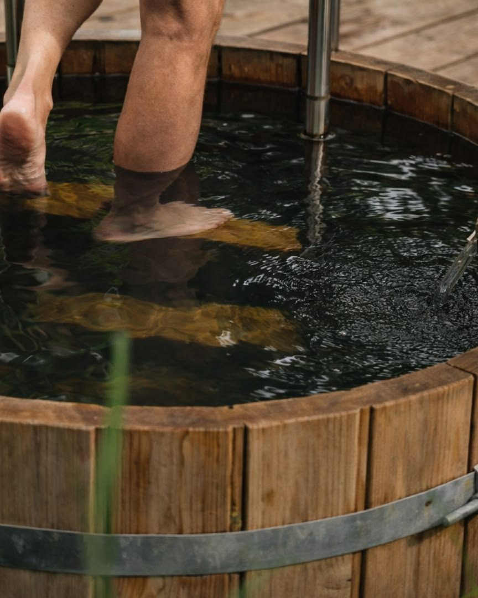
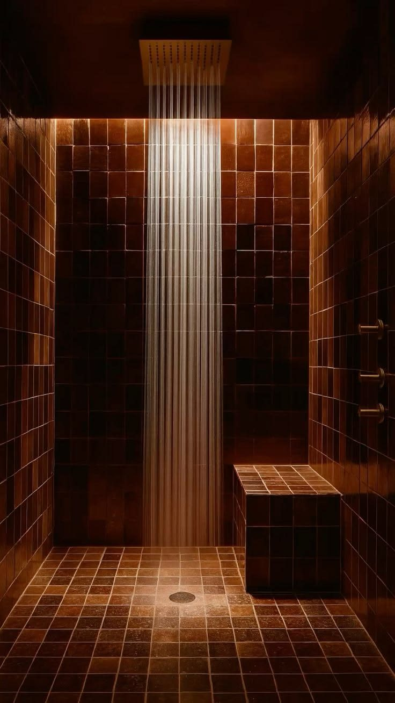
A designer writes a specialist into a plan set eighteen months before anybody moves in, and she does it because she has seen the work. We have taste and a point of view and nothing yet to point at, so everything in year one exists to fix that.
Settle the name. Sign dealer agreements across strength, cardio, sauna and plunge, never one maker. Make the first piece of furniture so there is something a designer can put her hand on. Build the trade kit and the one page rough in sheet a builder drops straight into a plan set, which costs nothing and puts us in the drawings before anybody has hired us.
Two flagship rooms through our own networks, one of each, priced to win, with the right to photograph them written into the contract. A staged show project with a spec builder, which stands in for the showroom we do not want yet. Photograph both to magazine standard and go at the design press.
Grow the trade program toward twenty five active Texas accounts. Sign audio visual integrators on a referral, which nobody in this category has done and which puts us inside houses that are already being wired. Publish one finished room's full spec, every maker and the reason for each piece.
Turn the pieces we have made into a short catalogue. Open the commercial line into hotels, clubs and schools. Look again at the Northeast, either through a second crew or through the Connecticut firm currently for sale.
Anybody looking at this seriously is going to find the following, so here it is from us first.
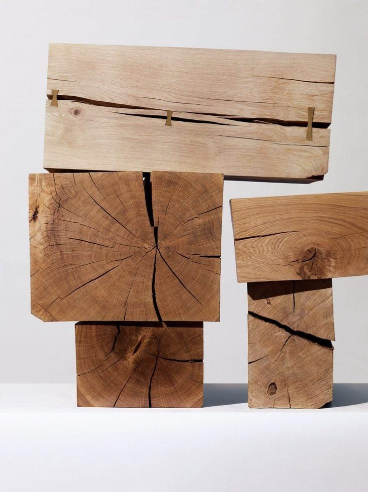
Dan has spent twenty years as a creative director on brands you would recognise, with an Emmy from one of them. He does the drawings, the materials, the light and everything you can see. What he actually cares about is why some rooms feel good to stand in and most do not.
Dave spent his in Texas law and wealth management, which means twenty years in rooms with the people who buy these houses. He does the makers, the trade, the crew and the money.
They both train seriously and have for a long time. Dave rides. Dan does CrossFit and is a purple belt in jiu-jitsu. Between them they have used a lot of rooms, and neither of them has been in one like the one they are describing, which is most of why they are doing it.
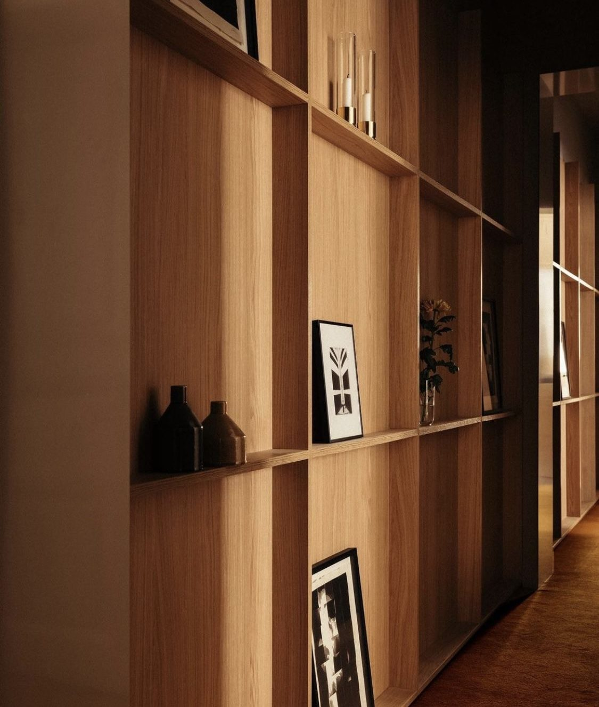
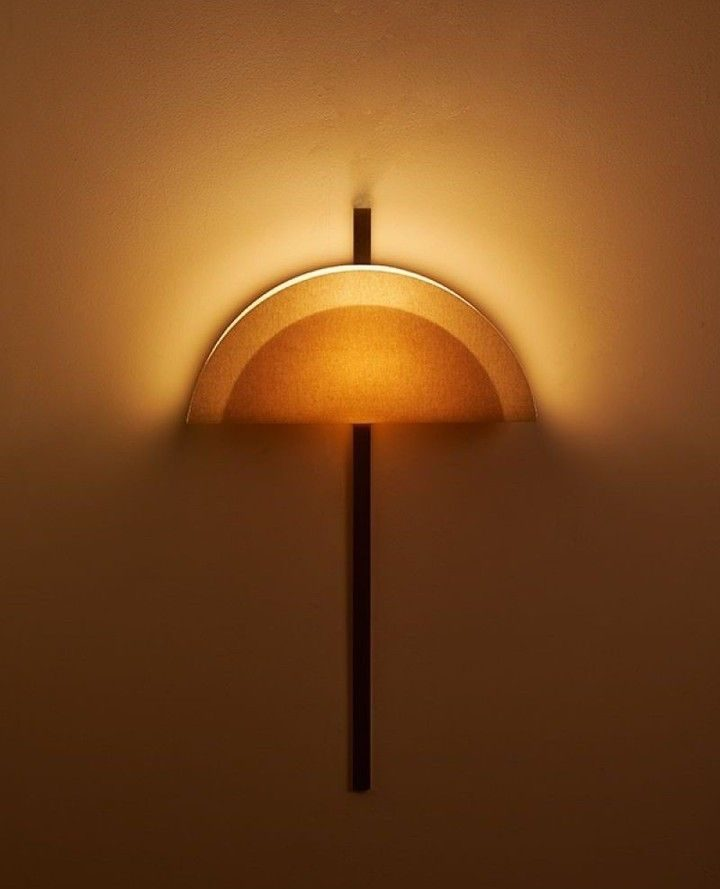
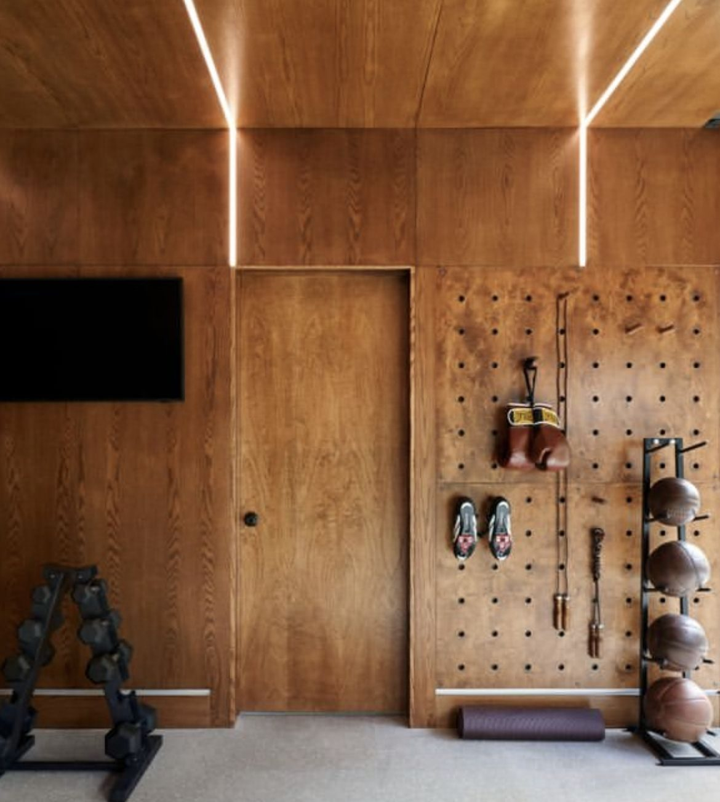
We would rather take money from somebody who would actually want one of these. The first room being yours is the cheapest proof either of us will ever get, and it is the one thing in this document that beats reading it.
So come and see what we are proposing, tell us what you really do in a week, and let us draw it for you. That conversation works whichever way you decide to come in.